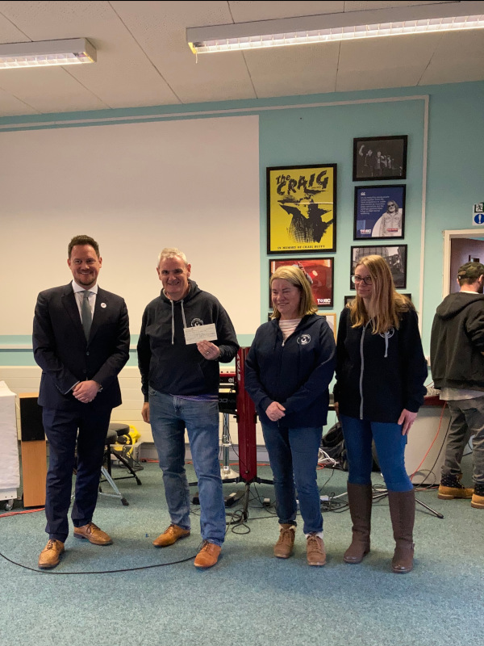

In the Community
Over the past few years, Portsmouth Joggers Club has made numerous community contributions. Club members try
their hardest to help those around them.
Our Purbrook Ladies 5, Summer Cross Country, and Pub2Pub all raise money for charitable causes. We decide which charities to donate to at
our Annual General Meeting. In just the last three years, we have given more than £7,000.
However, it goes beyond simply giving money.
- Every February, we raise money and gather donations for neighbourhood food banks.
- Every August, we donate used running shoes and apparel to a South African running club.
- We have provided parking marshalls for the South Downs GreenFair.
- Our members volunteer at two water stations for the Great South Run.
- Our members have donated Christmas presents to a women's hostel.
- We donate extra and unwanted medals to Medals for Kids.
- We have collected and donated children's clothing to KidsClothesLine Hampshire.
- We have provided water bottles to school playschemes that offer holiday activities and food for underprivileged children.
- Retired PJC members put on an annual Christmas Lights display to raise money for Woodsy's Food Pantry.
We are also a running club for affiliated mental health. To help members who are having difficulties, we have
welfare officers and a welfare fund.
